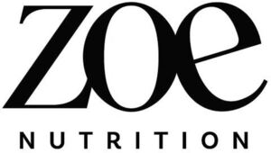

Trade Mark Journal No.2025/022 30 May 2025
WO0000001852735 (29,30,32)
Office of origin: Croatia
Date of International Registration:4 March 2025
Date of designation in the UK:
23 April 2025

International priority date claimed: 23 January 2025
(Croatia)
- Class 29
- Whey; whey powder.
- Class 30
- Coffee, teas and cocoa and substitutes therefor; ice creams, frozen yogurts, and sorbets; sugars, natural sweeteners, sweet coatings and fillings, bee products, and edible decorations; processed grains, starches, and goods made thereof, baking preparations and yeasts; salts, seasonings, flavourings and condiments; grain-based chips; rice crisps; rice-based prepared meals; prepared meals containing [principally] rice; boxed lunches consisting of rice, with added meat, fish or vegetables; snack food products consisting of cereal products; multigrain-based snack foods; cereal-based snack food; flour based snack foods; snack food products made from potato flour; snack food products made from cereal flour; snack food products made from rusk flour; snack foods made from wheat; rice-based snack food; snack food products made from rice flour; snack food products made from cereal starch; snack food products made from soya flour; cereal snack foods flavoured with cheese; snack foods prepared from maize; snacks manufactured from muesli; rice biscuits; flapjacks; crackers made of prepared cereals; rice crackers; crackers filled with cheese; crackers flavoured with vegetables; crackers flavoured with meat; crackers flavoured with cheese; crepes; chocolate-based ready-to-eat food bars; aromatic teas [other than for medicinal use]; aromatic preparations for making non-medicated tisanes; flavoured coffee; herbal teas; herb teas, other than for medicinal use; vegetal preparations for use as coffee substitutes; herbal tea preparations for making beverages; tea; chocolate; chocolate powder; chocolate coffee; chocolate-based beverages; chocolate beverages with milk; chocolate food beverages not being dairy-based or vegetable based; chocolates; chocolate extracts; chocolate syrups for the preparation of chocolate based beverages; chocolate extracts for the preparation of beverages; tea essences; tea extracts for culinary purposes; coffee extracts; extracts of cocoa for use as flavours in beverages; extracts of coffee for use as flavours in beverages; extracts of coffee for use as flavours in foodstuffs; coffee extracts for use as substitutes for coffee; malt coffee extracts; espresso; fermented tea; filters in the form of paper bags filled with coffee; frappes; aerated beverages [with coffee, cocoa or chocolate base]; ginseng tea; prepared coffee beverages; prepared cocoa and cocoa-based beverages; prepared coffee and coffee-based beverages; instant tea; instant tea [other than for medicinal purposes]; instant cocoa powder; instant coffee; instant white tea; instant black tea; instant oolong tea; cocoa; cocoa extracts for human consumption; cocoa mixes; instant green tea; cocoa beverages with milk; cocoa products; cocoa preparations for use in making beverages; cocoa [roasted, powdered, granulated, or in drinks]; cocoa powder; coffee capsules, filled; tea pods; cappuccino; coffee; decaffeinated coffee; coffee flavourings; malt coffee; coffee [roasted, powdered, granulated, or in drinks]; kombucha; coffee concentrates; iced coffee; ice beverages with a coffee base; iced tea; iced tea (non-medicated -); tea mixtures; chicory mixtures, all for use as substitutes for coffee; mixtures of malt coffee extracts with coffee; mixtures of malt coffee with cocoa; mixtures of malt coffee with coffee; milk chocolates; ground coffee; tea-based beverages; tea-based beverages with fruit flavoring; tea beverages with milk; cocoa-based beverages; chamomile-based beverages; coffee-based beverages; coffee beverages with milk; beverages based on coffee substitutes; coffee-based beverages containing ice cream (affogato); coffee-based beverage containing milk; chocolate-based beverages with milk; chocolate-based beverages; drinks in powder form containing cocoa; tea mix powders; iced tea mix powders; preparations based on cocoa; preparations of chicory for use as a substitute for coffee; chocolate drink preparations flavoured with banana; powdered preparations containing cocoa for use in making beverages; chocolate drink preparations flavoured with toffee; chocolate drink preparations flavoured with mint; chocolate drink preparations flavoured with orange; chocolate drink preparations flavoured with mocha; chocolate flavoured beverage making preparations; preparations for making beverages [cocoa based]; preparations for making beverages [coffee based]; chocolate drink preparations flavoured with nuts; chocolate drink preparations; preparations for making beverages [chocolate based]; preparations for making beverages [tea based]; coffee based fillings; hot chocolate; fruit teas; vegan hot chocolate; flavoured sugar confectionery; gluten-free bakery products; chocolate for toppings; chocolate flavourings; chocolate bark containing ground coffee beans; chocolate creams; chocolate vermicelli; chocolate desserts; chocolate fondue; chocolate marzipan; chocolate mousses; chocolate spreads; chocolate spreads containing nuts; chocolate spreads for use on bread; chocolate topping; chocolate decorations for cakes; chocolate waffles; crumble; dessert mousses [confectionery]; prepared desserts [confectionery]; ready-to-eat puddings; graham crackers; snack foods consisting principally of confectionery; foodstuffs containing chocolate [as the main constituent]; foodstuffs containing cocoa [as the main constituent]; foods with a cocoa base; imitation chocolate; imitation custard; instant dessert puddings; crackers; crackers flavoured with fruit; oat clusters containing dried fruit; ice beverages with a chocolate base; ice beverages with a cocoa base; ice confectionery; chocolate-coated hazelnuts; chocolate coated macadamia nuts; hot chocolate mixes; muesli desserts; sandwich spread made from chocolate and nuts; chocolate-based spreads; nougat cream spreads; non-medicated chocolate; nougat; chocolate coated nougat bars; chocolate-coated nuts; pavlovas made with hazelnuts; viennoiserie; bakery goods; chocolate based products; rice-based pudding dessert; custard; cinnamon rolls; savory biscuits; cotton candy; pastries, cakes, tarts and biscuits (cookies); almond confectionery; ginseng confectionery; chocolate-coated sugar confectionery; aperitif biscuits; wholemeal bread; biscuits [sweet or savoury]; onion or cheese biscuits; gluten-free bread; bread and buns; bread biscuits; thin breadsticks; buns; snack bars containing a mixture of grains, nuts and dried fruit [confectionery]; cereal based energy bars; snack foods made of whole wheat; chocolate-based meal replacement bars; bars based on wheat; cereal-based meal replacement bars; muesli bars; chocolate-coated bars; cereal based food bars; cereal preparations coated with sugar and honey; cereal preparations consisting of oatbran; cereal preparations consisting of bran; cereal products in bar form; sesame candy bars; high-protein cereal bars; cereal bars; oat bars; rice cake snacks; cereal cakes for human consumption; snack foods made from corn and in the form of rings; snack foods consisting principally of extruded cereals; viennese pastries; brownies; milk chocolate teacakes; chocolate pastes; chocolate biscuits; chocolate cakes; prepared desserts [pastries]; edible wafers; candied cakes of popped rice; biscuits containing chocolate flavoured ingredients; half covered chocolate biscuits; biscuits containing fruit; fried dough cookies (karintoh); biscuits having a chocolate coating; biscuits having a chocolate flavoured coating; biscuits with an iced topping; biscuits flavoured with fruit; filled biscuits; biscuits for human consumption made from cereals; biscuits for human consumption made from malt; biscuits for cheese; coconut macaroons; gingerbread; treacle tarts; cakes; plum cakes; frozen yogurt cakes; chocolate covered cakes; eclairs; cake bars; breakfast cake; cake pops; almond cookies; fortune cookies; flour confectionery; pie shells; cones for ice cream; pastry shells; doughnuts; cream pies; cream cakes; brittle; cream buns; poppy seed pastry; chocolate covered pretzels; non-meat pies; petit-beurre biscuits; pies [sweet or savoury]; oat biscuits for human consumption; oat cakes for human consumption; sweets; sugarless sweets; pastila [confectionery]; lozenges [confectionery]; filled chocolate bars; filled chocolate; pralines; candy bars; sweetmeats [candy] being flavoured with fruit; sweetmeats [candy] containing fruit; sweets (non-medicated -) in the nature of chocolate eclairs; sweets (non-medicated -) containing herbal flavourings; sweets (non-medicated -) being honey based; sweets (non-medicated -) in the nature of nougat; sweets (non-medicated -) in the nature of sugar confectionery; sweets (non-medicated -) in compressed form; sweets (non-medicated -) in the nature of caramels; sweets (non-medicated -) being acidulated; sweets (non-medicated -) being acidulated caramel sweets; mint flavoured sweets (non-medicated -); fruit drops [confectionery]; fruit gums [other than for medical use]; fruit confectionery; jelly beans; sugar-free chewing gum; dental health gum [other than medicated]; chewing gum; toffee; caramelised sugar; caramel; gum sweets (non-medicated -); aromatic preparations for cakes; aromatic preparations for pastries; almond flour; lentil flour; chickpea flour; bulgur; starch derivatives for food human consumption; gluten prepared as foodstuff; gluten additives for culinary purposes; starch for food; cereals; sponge cakes; instant pudding mixes; instant pancake mixes; instant doughnut mixes; biscuit mixes; brownie mixes; flour mixtures for use in baking; muffin mixes; pancake mixes; mixes for making puddings; rolled oats and wheat; porridge; flaked wheat; malted wheat; bran preparations for human consumption; hot breakfast cereals; food mixtures consisting of cereal flakes and dried fruits; muesli consisting predominantly of cereals; muesli; ready-to-eat cereals; breakfast cereals containing a mixture of fruit and fibre; breakfast cereals containing fruit; breakfast cereals containing fibre; breakfast cereals containing honey; breakfast cereals made of rice; breakfast cereals flavoured with honey; porridge oats; breakfast cereals; instant porridge; flavored ices; instant ice cream mixes; ice cream gateaux; fruit ice bars; soft ices; mixtures for making ice cream products; ice cream mixes; sorbet mixes [ices]; ice cream drinks; parfaits; frozen yogurt pies; powders for making ice cream; ice creams containing chocolate; ice lollies containing milk; soya based ice cream products; ice pops; binding agents for ice cream; ice lollies being milk flavoured; ice creams flavoured with chocolate; ice cream desserts; ice cream sandwiches; frozen yogurt confections; shaved ice with sweetened red beans; frozen yoghurt [confectionery ices]; ice milk bars; sherbets [ices]; ice-cream cakes; vegan ice cream; edible fruit ices; ice cream with fruit; fruit ices; water ice; fruit flavoured water ices in the form of lollipops; ice cream substitute; frozen custards; frozen confectionery containing ice cream; frozen confections on a stick; aromatic preparations for ice-creams; flavourings made from fruits; flavourings made from fruits [other than essential oils]; flavourings of lemons; vanilla flavorings; flavourings for foods; chocolate syrup; cinnamon [spice]; cinnamon powder [spice]; marshmallow topping; custard mixes; cinnamon sticks; vanilla beans; fructose for food; grape sugar; crystallized rock sugar; honey; sugar candy [for food]; brown sugar; tablets (non-medicated -) made of glucose with a caffeine base; natural sweeteners; sweeteners (natural -) in granular form; honey substitutes; fruit sugar; vanillin sugar; marzipan substitutes.
- Class 32
- Whey beverages; powders for the preparation of beverages; syrups for making whey-based beverages; whey drinks; whey drinks.
Zoe Fashion d.o.o.
Representative: Tomislav Hadžija u suradnji sa DENNEMEYER & ASSOCIATES, BCI- Business Center International - 1. kat, Miram, HR-10000 arska cesta 2410000 Zagreb, CROATIA